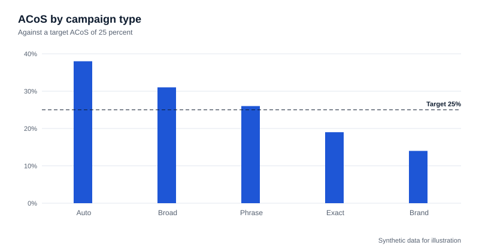
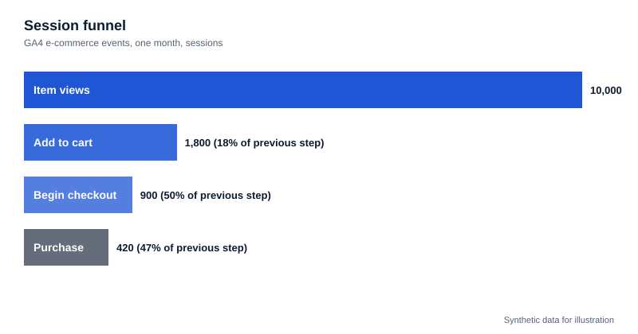
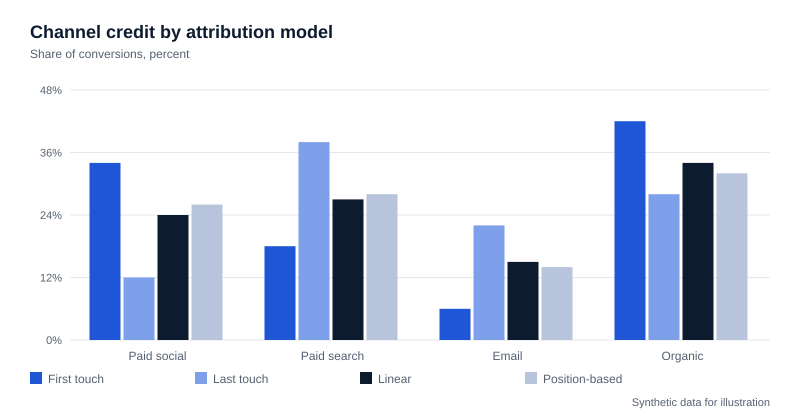
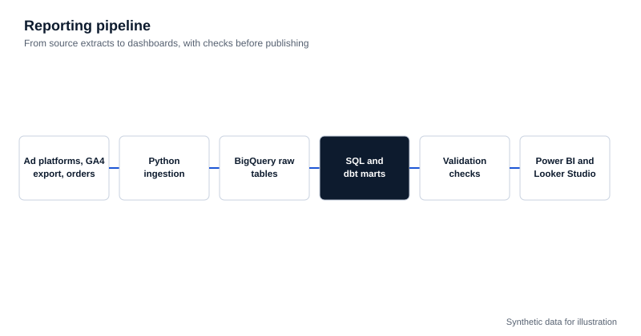

Marketing Analytics
Channel, campaign and keyword efficiency tied to margin, with budget recommendations.
- CAC, CPA, MER, ROAS, ACoS
- Contribution margin analysis
- Ad spend leakage
- Budget allocation
SQL, Python, Excel
Marketing Data Analyst | Marketing Measurement | E-commerce Analytics
With 5+ years in paid media and e-commerce analytics, I connect advertising, website, and order data to build reliable measurement systems and actionable performance reporting.
Channel, campaign and keyword efficiency tied to margin, with budget recommendations.
SQL, Python, Excel
Tracking audits and reconciliation of platform, GA4 and order data. Amazon is reconciled at campaign, ASIN and channel level, because marketplace reports do not give customer-level visibility.
GA4, GTM, BigQuery
Test design that separates causal lift from modelled attribution.
Python, SQL
Pipelines and dashboards that replace manual reporting.
BigQuery, Power BI, Looker Studio
Reduced wasted advertising spend through negative keyword restructuring and match-type budget optimization.
Improved advertising profitability through keyword and bid analysis. This refers to advertising profitability, not overall company profit.
Saved through automation of manual reporting workflows.
Selected results from US e-commerce client work. Figures come from separate engagements and are not one client's combined outcome.
Case studies use synthetic, illustrative data and describe method, not client outcomes.

Reconciling Google Ads, Meta, GA4 and Shopify order data in BigQuery to compare ROAS and MER by channel.
Read case study
Campaign, keyword, search term and ASIN-level analysis of Amazon Ads with ACoS, ROAS and negative keyword discovery.
Read case study
Session and funnel analysis from the GA4 BigQuery export to find conversion leakage and reconcile revenue.
Read case study
Comparing first-touch, last-touch, linear and position-based attribution, and how incrementality testing differs.
Read case study
Python and SQL pipelines into BigQuery with validation checks, feeding Power BI and Looker Studio.
Read case studyI bring together hands-on paid media experience and technical marketing analytics.
Having managed Amazon Ads and Google Ads accounts, I understand how advertising platforms generate their reported metrics, where measurement gaps occur, and why platform-reported performance can differ from actual business results.
My work focuses on connecting advertising, website analytics, and sales data through SQL, Python, and BigQuery, helping businesses make more informed decisions about channel performance, profitability, and marketing investment.
SQL, Python, Pandas, NumPy, Git
Google BigQuery, dbt, Python pipelines, GA4 BigQuery export
GA4, Google Tag Manager, Consent Mode, server-side tagging
Amazon Ads, Google Ads, Meta Ads
Shopify, Amazon Marketplace
Power BI, Looker Studio, Excel, Google Sheets
If you're looking to reconcile marketing performance, improve measurement infrastructure, automate reporting, or understand what's actually driving revenue, let's connect.
adnan3624@gmail.com +92 306 9098215 LinkedIn GitHub Download CV